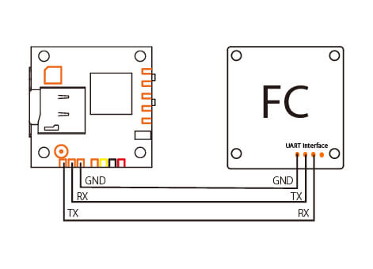

RunCam Camera Support¶
Note that this feature will be released in ArduPilot 4.1
Description¶
RunCam devices support the Runcam Device Protocol which is the serial communication protocol initially developed for the RunCam Split and analog cameras.
The protocol itself supports not only full camera OSD menu navigation but also triggering recording on split style cameras as well as communicating the available SD-card space, syncing the current date, writing to the OSD and turning the camera or WiFi function (if available) on and off.
Not all features of the protocol are currently supported in ArduPilot and not all features of the protocol are supported on all cameras. In particular it is important to distinguish between cameras that support the “5-button protocol” (generally camera -only devices such as the RunCam Racer) and cameras that support the “2-button protocol” (generally split-style cameras). These two protocols originated from the 5-key external OSD keyboard and 2 buttons present on split-style cameras. Equally important is to understand that the RunCam device protocol is almost a direct mapping from the hardware - so the way that you would physically press a button is the way that the protocol is invoked. The only caveat here is that the 5-button protocol recognizes keys being released, whereas the 2-button protocol does not, leading to some limitations in the way that menus and options can be navigated.
Lately, similar to TBS Smartaudio and IRC Tramp, other companies (for instance Caddx) have started to adopt support for the protocol in their cameras. Currently supported features in ArduPilot
Full camera OSD control
Starting/Stopping recording on split style cameras
Setup¶
One free non-inverted UART on the FC is required (TX and RX). Connect TX to RX, RX to TX and GND to GND. Pinouts for serial ports on The Cube can be found here. Check the board documentation for other boards.
On some camera-only devices the pinout is labeled such that TX should be connected to TX and RX to RX. If your RunCam device is not recognized try reversing the signal wires. Not all cameras support a UART ground pin - they expect to get ground from the power supply.
The camera must be in UART control mode. On split-style cameras this should be the default. On camera-only devices you will need to follow the procedure for putting the device in UART control mode. Consult your RunCam manual for more details.
Note that so-called “Joystick control” is not supported and some devices only support joystick control, so be careful when selecting the RunCam model you are going to use. The following devices have been tested successfully - RunCam Split 3s Micro, RunCam Split 2s, RunCam Racer 3.
In order to recognize the RunCam serial protocol on the UART, set the UART serial protocol to 26. So for instance for serial port 5, set SERIAL5_PROTOCOL = 26 (RunCam protocol). The correlation between serial port numbering and UART physical ports for your autopilot should be documented in its description page linked here.
When the camera is connected correctly and the serial port configured correctly you will see a message similar to the following at boot:
APM: RunCam initialized, features 0x0077, 2-key OSDotherwise you will seeAPM: RunCam device not found.The camera must be powered and fully booted in order to accept commands. This can take some time and the delay between the autopilot booting and the camera being probed can be controlled through CAM_RC_BT_DELAY. The camera will be probed repeatedly until CAM_RC_BT_DELAY elapses, but once that has expired the camera will not be probed again.
Some split-style cameras support three modes - video standby, video start and picture mode. It is not possible to tell from the RunCam device protocol whether this is the type of camera in use and so this must be configured. Set CAM_RC_TYPE = 2. Most other cameras should be fine with the default, however some of the later cameras have a bug where video start/stop protocol commands are not properly supported and a workaround has to be used. Cameras known to have this problem are the RunCam Split4k and require setting CAM_RC_TYPE = 3. In addition to this problem RunCam Hybrid cameras have a QR code mode which can also cause problems for recording control. For RunCam Hybrids set CAM_RC_TYPE = 4. For RunCam2 4K camera, set CAM_RC_TYPE = 5.
{kind=link}
Note that RunCam are bringing out new cameras all the time and seem to change the video controls with almost every camera, so if you are having issues - particularly with video control - try one of the other camera types for CAM_RC_TYPE.
In order to control start and stop of video recording from a radio transmitter set a free rc channel to
RCx_OPTION= 78 to enable triggering from that RC input channel. If the switch is in the low position then video recording is stopped, if in the high position then video recording is started.In order to control entering the OSD menu set a free rc channel to
RCx_OPTION= 79. If the switch is in the low position then the OSD menu is exited, if in the high position then the OSD menu is entered. The OSD menu can also be entered by default through rolling hard right while disarmed.
{kind=link}